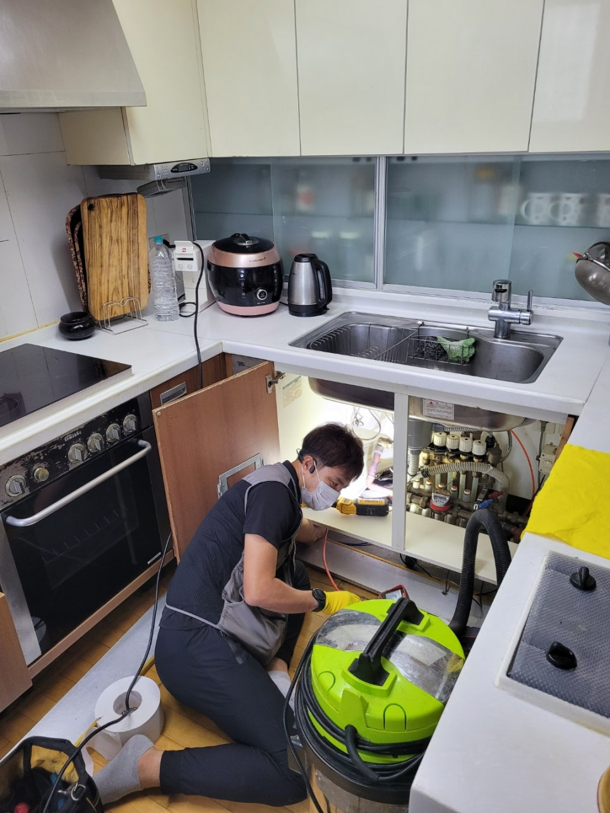
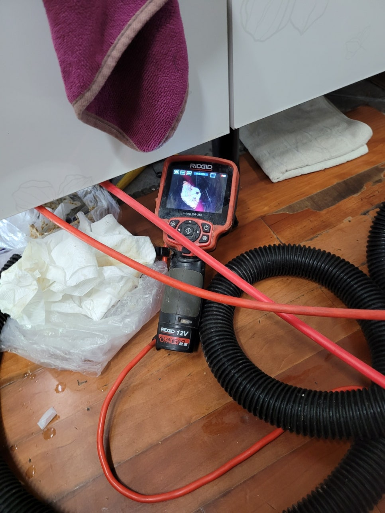
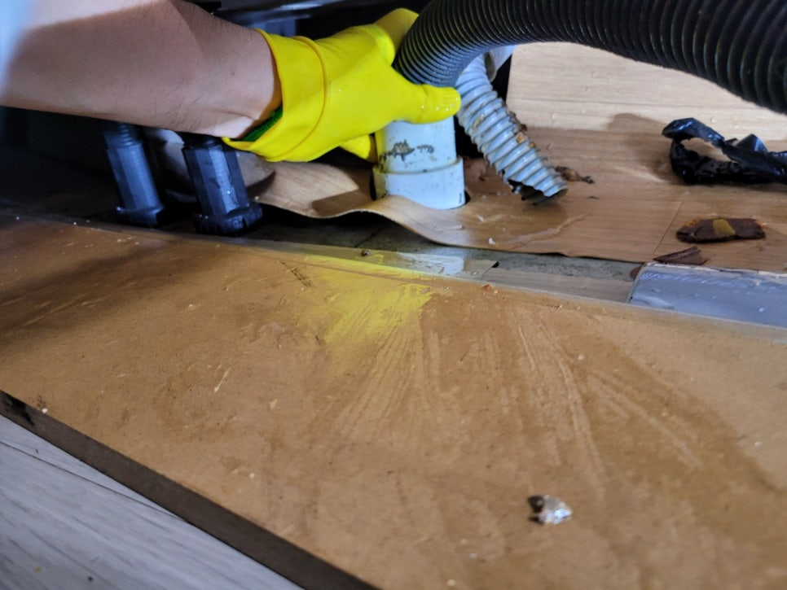
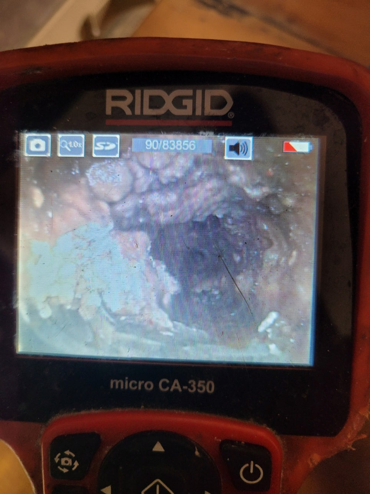
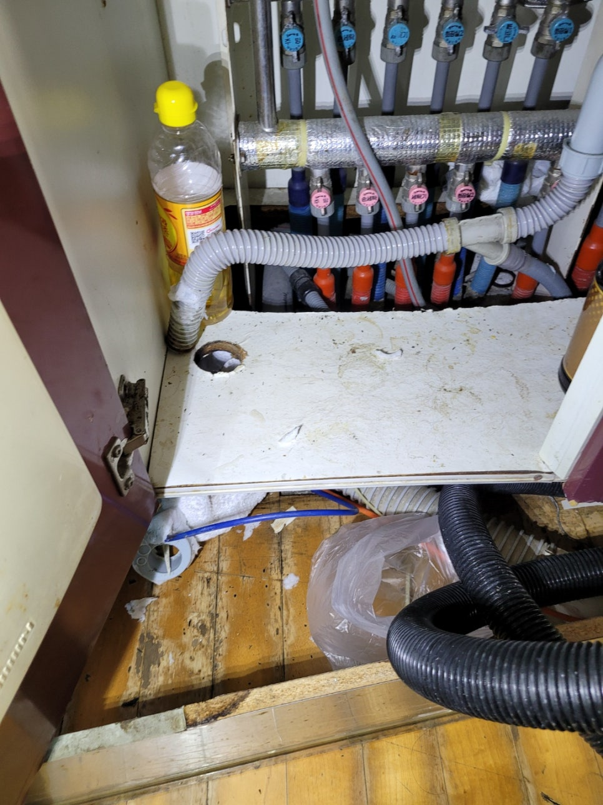
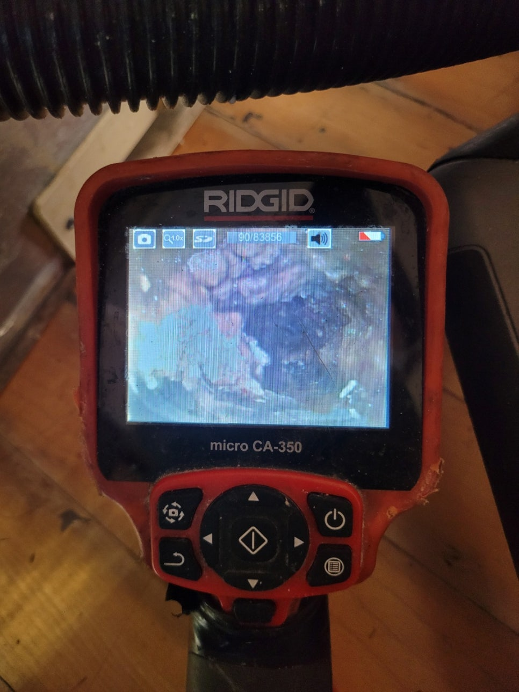

🏠 영통구 광교싱크대막힘 싱크대하수구역류 해결
수원 싱크대막힘 전문 시공 후기

📋 작업 개요
- 위치: 수원
- 서비스 유형: 싱크대막힘, 하수구막힘, 배관막힘, 누수수리, 역류해결, 뚫는업체, 배관청소
- 작업 일시: 2022. 10. 3. 20:56
- 업체명: 하수구수사대 (010-5615-2118)
🔍 문제 상황
영통구 광교싱크대막힘 싱크대하수구역류 해결
안녕하세요
하수구배관케어 전문업체
"하수구수사대"입니다.
오늘은 수원 영통에 위치한 아파트 싱크대막힘
현장을 포스팅하겠습니다.
싱크대막힘으로 인하여 불편을 겪고 있다는
고객님의 접수를 받고 바로 출동하였습니다.
물을 못 쓰다보니 주방에서 할수 있는 모든 일이 중단되어
많은 스트레스를 받고 계셨어요.
이 부분을 해결해드리기 위해 광교싱크대막힘
현장을 빠르게 방문하였습니다.
고객님께 유선상으로 증상을
들었고 이 부분에 필요한것 같은 장비를 모두
챙겨서 올라갔습니다.
우선 싱크대 하수구를 완벽하게 뚫으려면
내시경카메라와,습식석션기,플렉스샤프트가
필수입니다.
예전에는 스프링장비로만 가능하였지만
장비도 많은 발전을 했어요^^
우선 현장을 보니 주방배수구막힘 때문에
설거지를 급하게 종료하신 느낌이 들었습니다.
고객님께 여쭤보니 설거지를 하다가 갑자기
물이 내려가지 않아 사용하지 않았답니다.
증상에 대해 유선으로 설명을 들었지만 현장에서도

🔎 원인 분석
💡 전문가 진단: 정밀 진단 장비를 사용하여 슬러지의 고착 여부를 판명하고 타격/세척 작업을 실시했습니다.
따로 여쭤보았답니다.
그동안 별다른 증상이 없어서 그냥 사용을 하고
계셨다고 합니다.
그러다가 이번에는 물이 안내려가고 고이게 되면서
급하게 물을 잠그고 저희 업체를 선택해 주셨다고
하십니다.
막힌 상태에서 물을 계속 사용하면 오히려
역류가 되어 밑에층까지 누수가 되는 일이 생길수
있으니 조심하여야 해요.
일단 물이 고여있기 때문에 셕션장비로 정리를
하고 시작을 합니다.
석션기는 습식으로 물과 이물질을 동시에
흡입하여 주는 장비입니다.
사용바업은 주름관이 있던 자리와 하수구입구에
대고 흡입하여 주면 된답니다.
강한 힘으로 흡입을 하기 때문에
배관에 떨어져 있는 이물질이 딸려 나오게 됩니다.
오수를 정리해주기도 하니 작업을 좀더 청결하게
진행할수 있어집니다.
만약 기름 슬러지가 있다면 흡입이 될때 묵직한 느낌이
들어야 하는데 계속해서 가벼운 느낌만 들었어요.
뭔가 이상하여 석션기 통을 열어봤습니다.
석션기 통을 보니 별다른 이물질이 나오지 않았어요.
간간히 조그만한 찌꺼기 정도였고 이런 이물질로는
막힘까지 이루어지지 않기 때문에
다른 원인이 있다는 판단이 서게 되었습니다.

🔧 작업 과정
대부분 이런 경우에는 단단하고 딱딱한 기름이
막고 있는 것이기 때문에 내시경카메라라 필요한 상황입니다.
내시경으로 정확한 원인을 함께 위치까지 알아보려고 해요.
내시경을 넣고 화면을 살펴보니 뭔가 크고
단단한 물체가 보였습니다.
바로 기름 덩어리였어요.
기름이 우리가 생각할때는 액체상태지만
요리를 하고 난 후에는 식재료의성분이 섞인 기름이 됩니다.
조리를 한 뒤에느 기름이 굳으면 하얗게 변하게 된답니다.
이러한 기름은 배관 속에서 굳으면 벽에 붙어 단단하게
고정이 됩니다.
시간이 지나면 이상태로 점차 딱딱해지고 다른 이물질이
내려오면서 그 부위에 달라붙기 때문에
사이즈기 점차 커지게 됩니다.
결과적으로 이런 거대한 기름 덩어리를
형성하게 되고 단단하고 사이즈도 크기 때문에
온전하게 보존하고 꺼낼수느 없답니다.
이럴때는 배관 속에서 잘게 부숴준다음 빼내는
방법을 사용해요.
이 부분에 맞는 장비가 바로 플렉스샤프트입니다.
샤프트는 노즐앞에 체인이 회전을 하면서 기름덩어리를
갈아내는 장비입니다.
덕분에 크기는 작아지고 배관에서 떨어지기 때문에
석션기를 통해 흡입하여 제거할수 있습니다.
플렉스샤프트를 이용하여 막힘의 원인을 제거하도록
합니다.
노즐도 길기 때문에 깊숙한 배관속도 작업이
가능하고 전체적으로 깨끗하게 만드는 스케일링
작업을 할 수 있답니다.
샤프트는 기름 뿐만 아니라 음식물 찌꺼기도
제거가 가능합니다.
초반에는 단단한 기름 때문에 깊숙한 곳까지
노즐이 들어가지 못했습니다.
결국 초입부터 천천히 작동을 시켜서
점점 밀어넣는 방법을 이용해보려고 합니다.
이물질들은 배관안에서 썩었기 때문에
밖으로 튀지않게 조심히 작업이 이루어집니다.
내시경을 보면서 배관청소가 이루어지는데요
보면서 작업을 하면 훨씬 꼼꼼하게 작업할 수 있답니다.
체인이 배관속에서 회전을 하면서 단단한


✅ 작업 완료
기름이 부숴지고 갈아지게 됩니다.
배관청소가 끝나면 물이 잘 내려가는지
확인을 해보니 역시나 시원하게 잘 내려가는걸
눈으로 확인하였습니다.
이렇게 주방하수구막힘 원인까지 깔끔하게
해결했기때문에 배관을 새거처럼 잘
관리하시면 평생 막힐일이 없을겁니다^^
저희는 근본적인 원인을 해결해 드리고
철저한 AS를 보장해 드리고 있으니
언지든지 전화 주시면 속시원하게 해결해 드리겠습니다.
경기도 수원시 영통구 봉영로 1612 7층 710-A19호




⚠️ 베란다 누수 및 방수 관리 방법
- ✅ 비가 많이 올 때 창틀 주변이나 아래층 천장에 얼룩이 생기는지 정기적으로 확인해 보세요.
- ✅ 우수관 주변 실리콘 마감이 들뜨거나 깨진 틈새가 있는지 손상 여부를 수시로 체크하세요.
- ✅ 베란다 바닥 타일의 줄눈(메지)이 소실되면 그 틈으로 물이 침투하여 누수가 유발됩니다.
- ✅ 누수 의심 증상 발견 시 방치하면 아래층 손실이 커지므로 즉시 전문가의 진단을 받으십시오.
💡 핵심 정리
- 확실한 장비 작업(내시경 점검 및 샤프트 스케일링)으로 원인을 뿌리 뽑습니다.
- 작업 후 1년 이내에 동일한 부위 재발 시 100% 무상 A/S 서비스를 보장합니다.
- 서울 · 경기 · 인천 전 지역에 24시간 언제든 긴급 출동할 수 있도록 항시 대기 중입니다.
❓ 자주 묻는 질문 (FAQ)
🚨 수원 싱크대막힘 문제로 고민이신가요?
정확한 원인 진단과 확실한 시공으로 재발 없는 해결을 약속드립니다.
24시간 긴급 출동 | 서울 · 경기 · 인천 전지역 | 1년 내 재발 시 무상 A/S